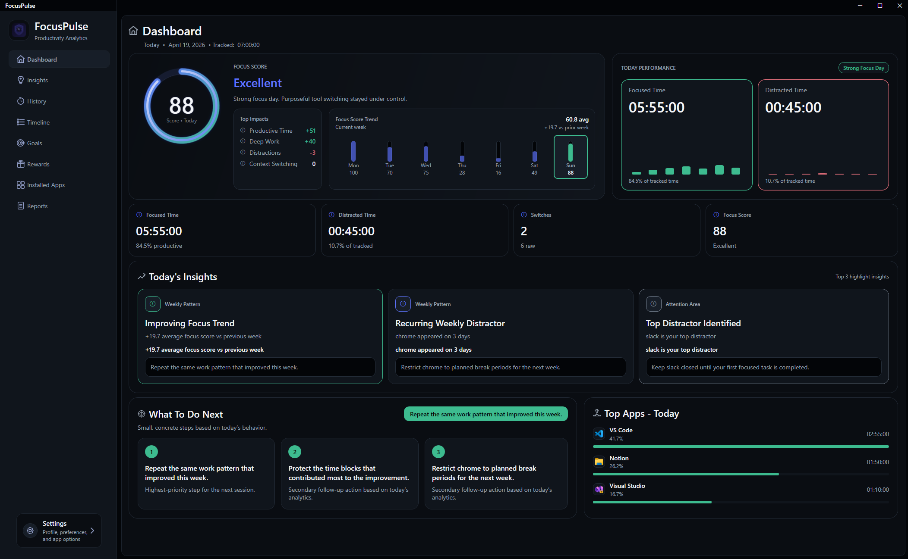
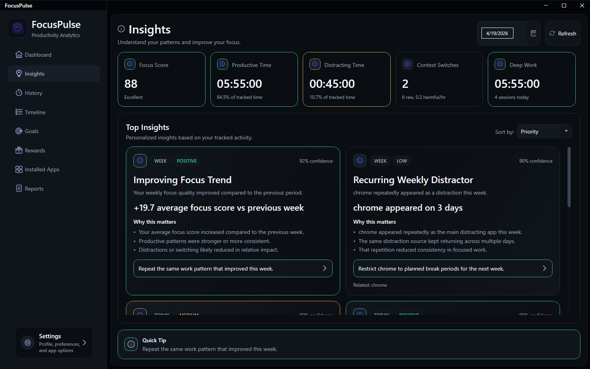
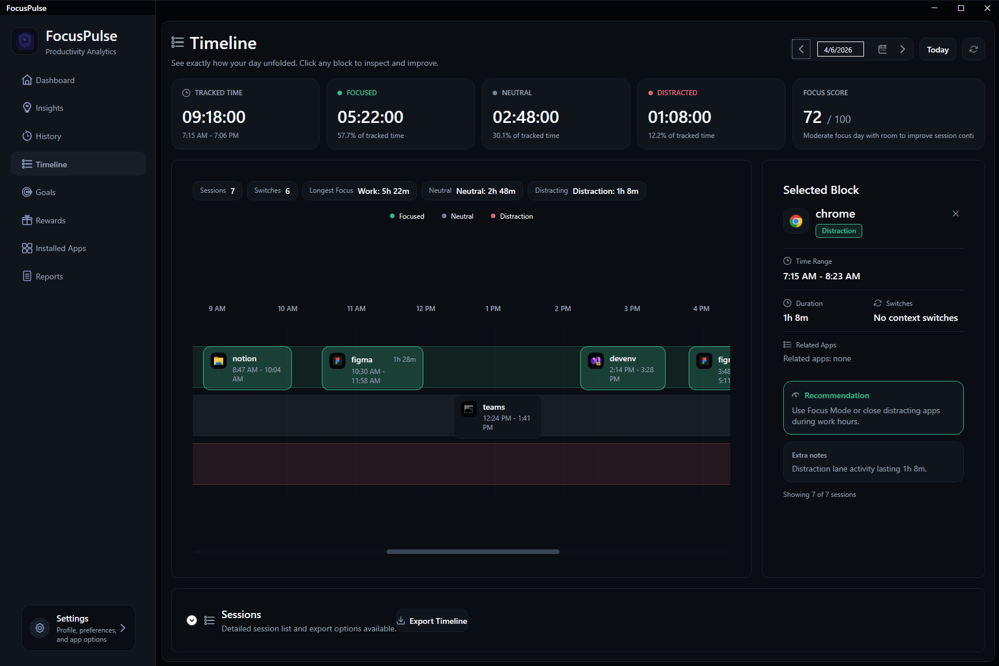
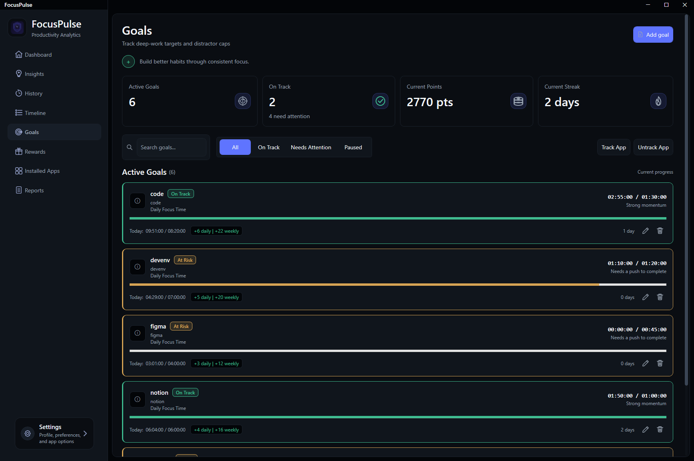
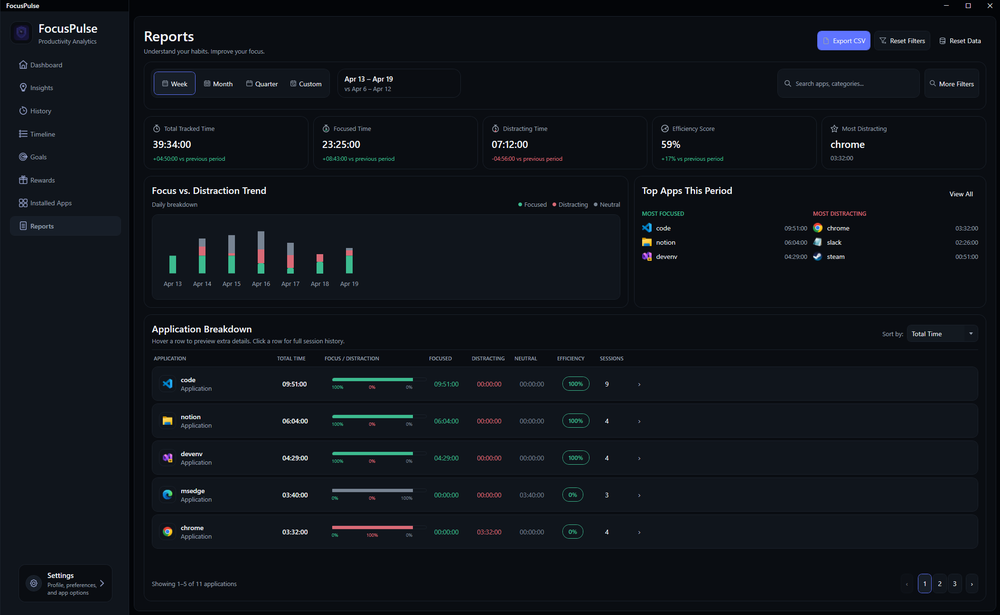
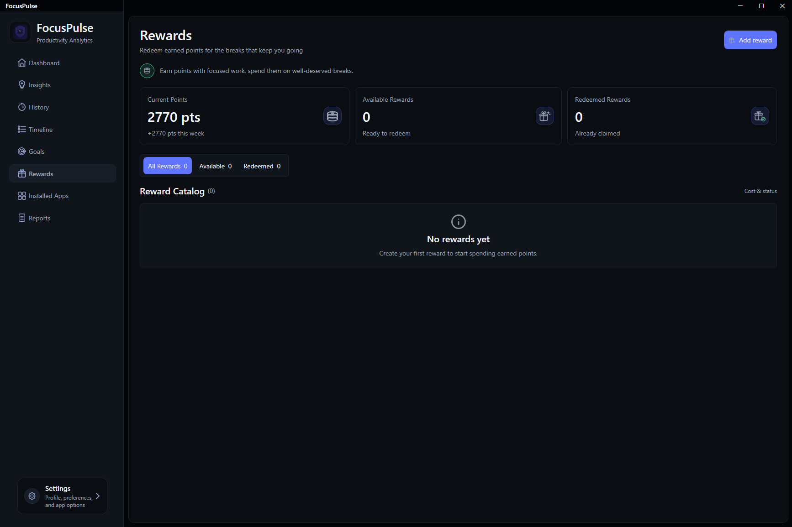
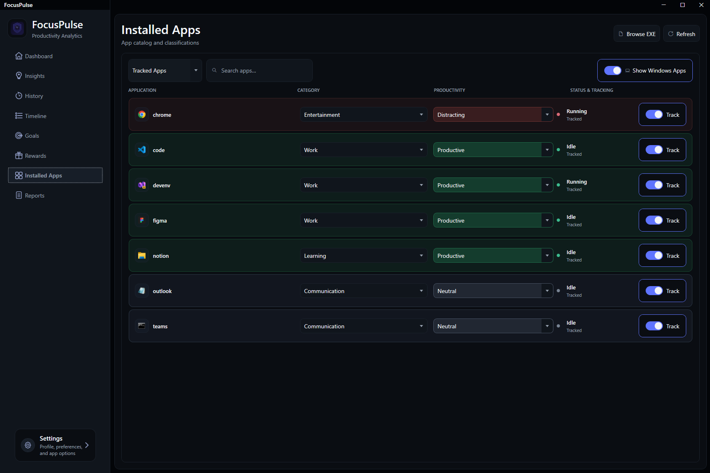
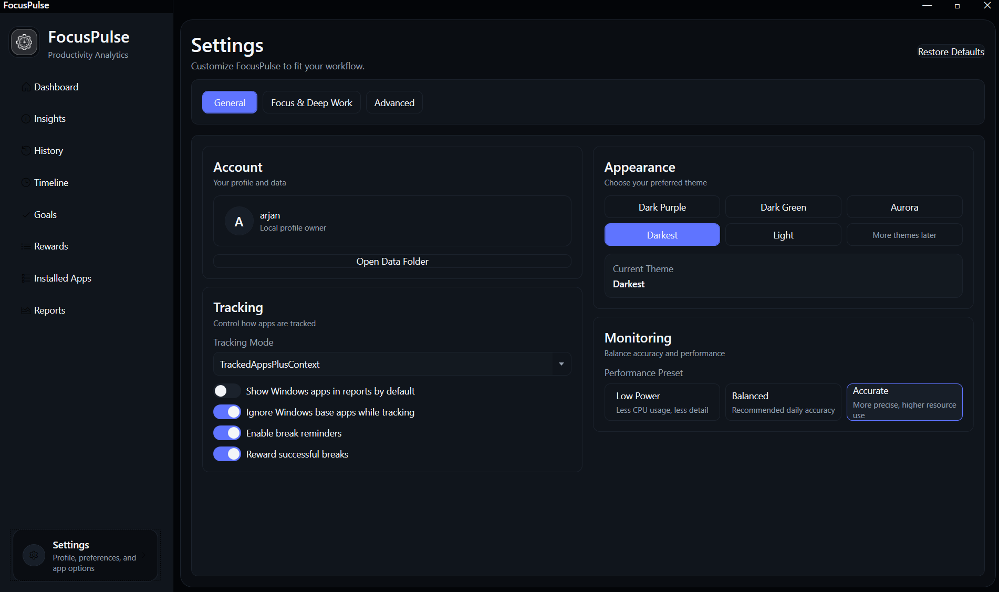
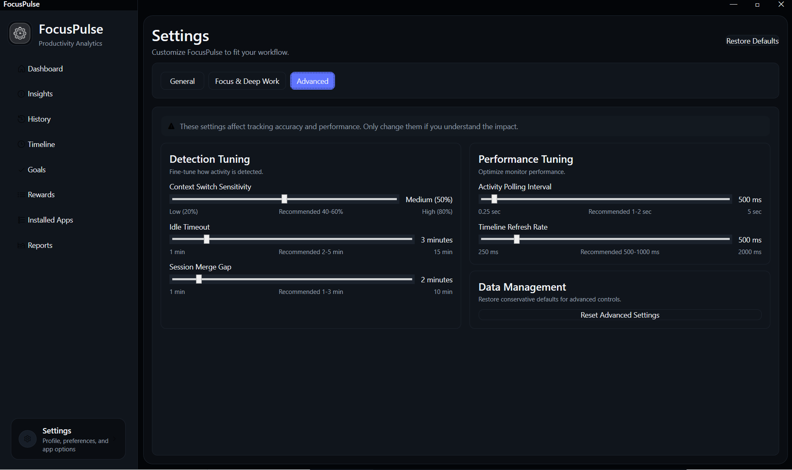

A Windows desktop application that tracks foreground app activity in real-time, computes daily focus scores, surfaces actionable behavioral insights, and helps you build deep-work habits through goal tracking and a rewards engine. Built with WPF, .NET 8, MVVM architecture, and a rule-based insight pipeline.
Click any screenshot to expand. All UI is hand-crafted in WPF/XAML with a custom dark theme and reusable component system.

Dashboard — real-time focus score, weekly trend, top apps, and today's insights









From real-time activity capture through to behavioral insights, every screen is powered by a distinct service with a clear, testable responsibility.
Strict layer separation — views present, view models orchestrate, services own domain logic, models carry data. No business logic in XAML code-behind.
Every insight has a clear derivation path — from the captured window event down to the recommendation shown on screen. Nothing is hardcoded.
/// Calculates focus score from daily metrics. public FocusScoreResult Calculate(FocusScoreInput input) { var productive = ScoreProductiveRatio( input.ProductiveMinutes, input.TotalTrackedMinutes); var deepWork = ScoreDeepWork( input.DeepWorkBlocks, input.DeepWorkMinutes); var switches = PenalizeContextSwitches( input.ContextSwitchCount, input.TrackedHours); return new FocusScoreResult { Score = Math.Clamp( productive + deepWork - switches, 0, 100), Breakdown = BuildBreakdown(...) }; }
No unnecessary dependencies. Every library was chosen to solve a specific problem that native .NET cannot handle adequately on its own.
<Project Sdk="Microsoft.NET.Sdk"> <PropertyGroup> <OutputType>WinExe</OutputType> <TargetFramework>net8.0-windows</TargetFramework> <UseWPF>true</UseWPF> <Nullable>enable</Nullable> </PropertyGroup> <ItemGroup> <PackageReference Include="Microsoft.EntityFrameworkCore.Sqlite" Version="8.0.*" /> </ItemGroup> </Project>
FocusPulse is currently in active development and not yet publicly released. If you'd like to try a demo build or just want to discuss the project and its architecture, feel free to reach out.
I'll send over a build and am happy to walk you through it.